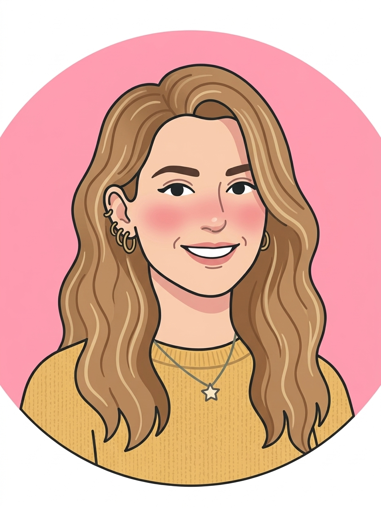

γνώρισε την ομάδα

Είμαι εκπαιδευτικός Πρωτοβάθμιας Εκπαίδευσης (ΠΕ70) και διδάσκω σε ελληνικό Δημοτικό Σχολείο, με τρέχουσα διδακτική εμπειρία στην 4η τάξη. Διαθέτω minor στο Leadership & Management από το American College of Greece (Deree) και έχω ολοκληρώσει εξειδικευμένη εκπαίδευση πάνω στην Τεχνητή Νοημοσύνη μέσω του AI Wonder Lab. Παράλληλα παρακολουθώ το Πρόγραμμα Μεταπτυχιακών Σπουδών «Ηλεκτρονική Μάθηση» του Πανεπιστημίου Πειραιώς. Στο μάθημά μου αξιοποιώ καθημερινά ψηφιακά εργαλεία και ενσωματώνω εφαρμογές AI στις εκπαιδευτικές μου δραστηριότητες, με στόχο την ανάπτυξη της κριτικής σκέψης των μαθητών μου — μια διάσταση που εστιάζω και στις μεταπτυχιακές μου σπουδές.

Είμαι απόφοιτη του Τμήματος Στατιστικής και εργάζομαι ως καθηγήτρια Μαθηματικών σε φροντιστήριο, διανύοντας την πρώτη μου χρονιά στον χώρο της εκπαίδευσης ανηλίκων. Στο μάθημά μου αξιοποιώ, όσο είναι δυνατόν, ψηφιακά εργαλεία και σχεδιάζω τις εκπαιδευτικές δραστηριότητες με βάση τις αρχές και τις πρακτικές που μελετώ στο ΠΜΣ Ηλεκτρονικής Μάθησης του Πανεπιστημίου Πειραιώς, επιδιώκοντας μια ουσιαστική μαθησιακή εμπειρία για τους μαθητές μου. Διαθέτω minor στο Human Resource Management από το ACG, όπου ολοκλήρωσα και την πρακτική μου άσκηση.